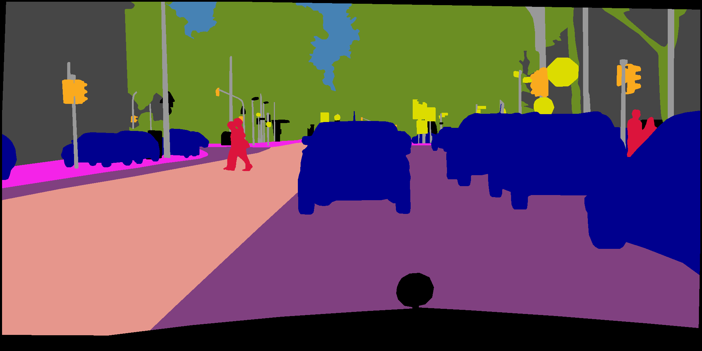
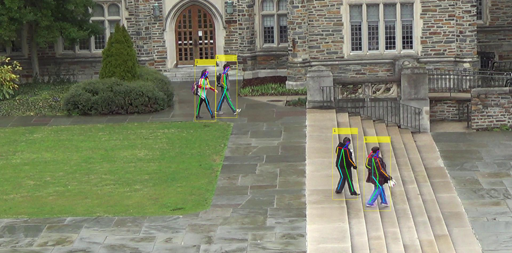
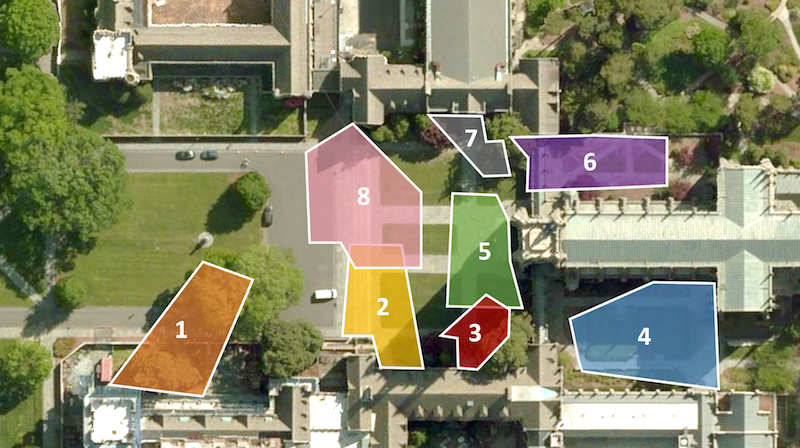
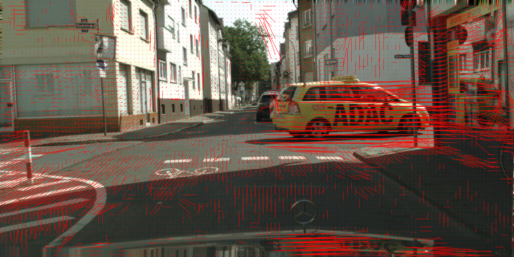
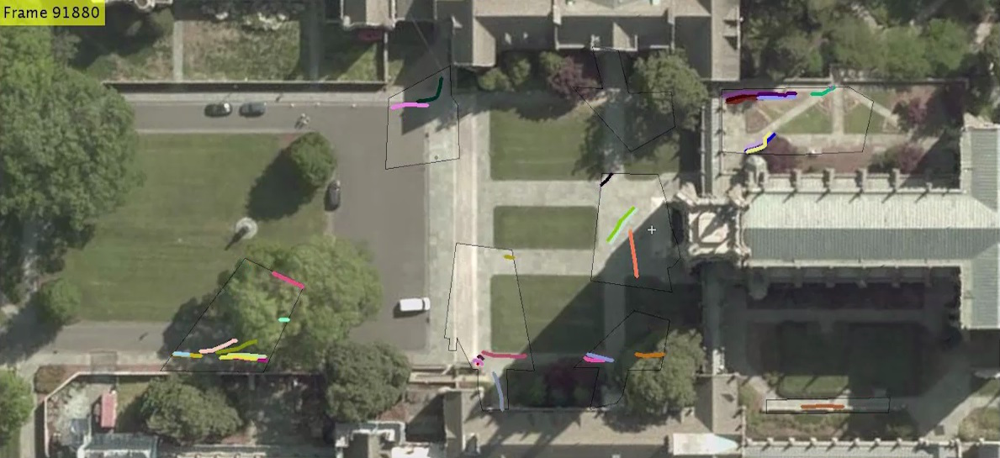
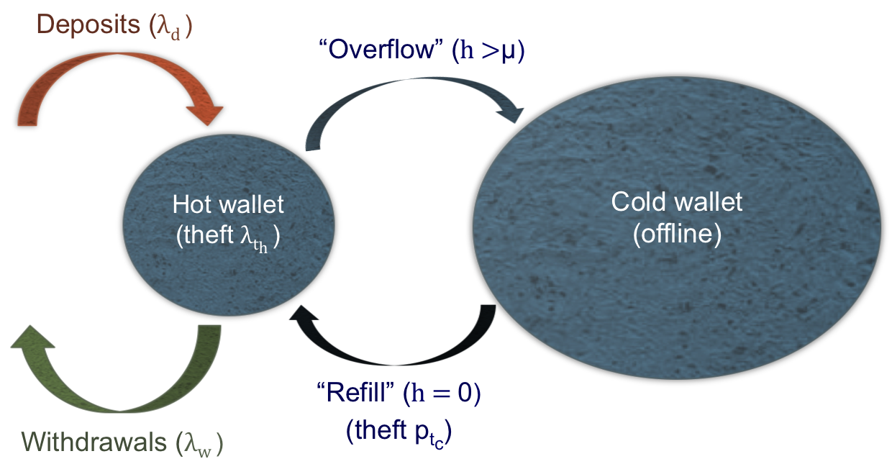

Samvit Jain
| Hello! I am a machine learning engineer at Google, where I build models to detect & deter payment fraud. In the past, I developed computer vision systems for the cloud and edge at AWS and Microsoft Research.
Within AI, I have a particular interest in consumer use cases (powered by multimodality), and building the future of knowledge work — one that that is high leverage, high autonomy, creative, and people-oriented. Much earlier, I spent time at Databricks and co-founded LinkMeUp. For more about me, check out the links below. |
|  | Samvit Jain, Xin Wang, Joseph E. Gonzalez CVPR 2019 [Oral presentation] |
|  | Samvit Jain, Ganesh Ananthanarayanan, Junchen Jiang, Yuanchao Shu, Joseph E. Gonzalez ACM HotMobile 2019 summary | arXiv | program | website | video
We discuss the potential of spatio-temporal correlations -- content correlations between geographically proximate cameras in wide-area enterprise camera deployments -- to improve cost efficiency and inference accuracy in large-scale video analytics operations. Our template application is real-time person re-identification and tracking. |
Samvit Jain, Edward Felten, Steven Goldfeder Journal of Cybersecurity (JCS), 2018 summary | pdf | program
We investigate the fundamental tradeoff between exposure to online (network-based) and offline threats faced by a Bitcoin exchange that must store Bitcoin across online and offline storage, while guaranteeing availability to customers. Parameterizing deposit, withdrawal, and theft events as Poisson processes, we are able to model the financial dynamics of the exchange, and solve for the optimal threshold on online storage. |
|  | Samvit Jain, Xun Zhang, Yuhao Zhou, Ganesh Ananthanarayanan, Junchen Jiang, Yuanchao Shu, Victor Bahl, Joseph E. Gonzalez ACM/IEEE Symposium on Edge Computing (SEC) 2020 [Best paper award] summary | arXiv | program | website
Enterprises are increasingly deploying large camera networks for video analytics. But video analytics is compute and data intensive, with cost growing with the number of cameras and operation time. To address this cost challenge, we present Spatula, a new system for efficient cross-camera video analytics. Spatula exploits spatial and temporal locality in the dynamics of real camera networks to guide its inference-time search for a query identity. |
|  | Samvit Jain, Joseph E. Gonzalez ECCV International Workshop on Video Segmentation 2018 |
|  | Samvit Jain UC Berkeley Master's Thesis (Advisor: Joseph E. Gonzalez) summary | pdf
This body of work is motivated by a simple statement: machine learning systems must meet the performance requirements of the applications they enable. Advances in deep learning applied to vision have unlocked opportunity in robotic navigation, industrial and agricultural monitoring, and retail intelligence, each use case with its own latency, throughput, and cost constraints. This thesis is a step toward solving this constrained optimization problem. |

|
Samvit Jain Princeton Senior Thesis (Advisor: Brian Kernighan) |

|
Samvit Jain Princeton Junior Independent Work (Advisor: Arvind Narayanan) |
|  | Samvit Jain Princeton Sophomore Independent Work (Advisor: Edward Felten) summary | pdf | github
We investigate the fundamental tradeoff between exposure to online (network-based) and offline threats faced by a Bitcoin exchange that must store Bitcoin across online and offline storage, while guaranteeing availability to customers. Parameterizing deposit, withdrawal, and theft events as Poisson processes, we are able to model the financial dynamics of the exchange, and solve for the optimal threshold on online storage. |
| CVPR 2019 | Accel: A Corrective Fusion Network [video] | Long Beach, CA | June 20, 2019 |
| RISE Lab Retreat | Scaling Video Analytics [video] | Lake Tahoe, NV | May 23, 2019 |
| BAIR Lab Retreat | Accel: A Corrective Fusion Network | Sonoma, CA | Mar 25, 2019 |
| HotMobile 2019 | Scaling Video Analytics | Santa Cruz, CA | Feb 27, 2019 |
| ECCV 2018 Workshop | Accelerating Semantic Segmentation on Video | Munich, Germany | Sep 14, 2018 |